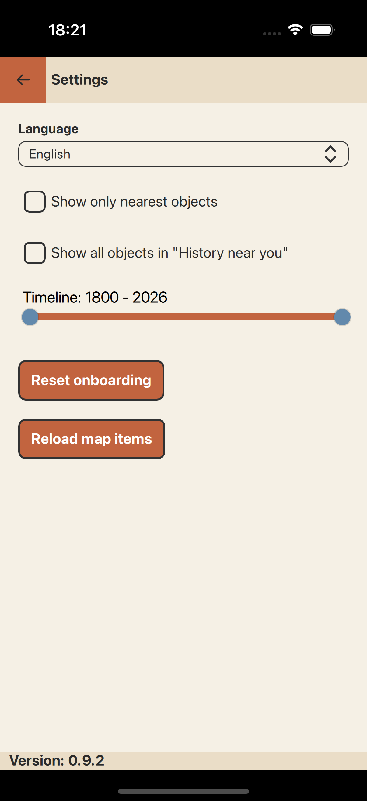
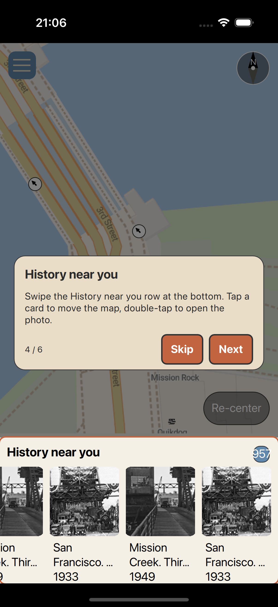
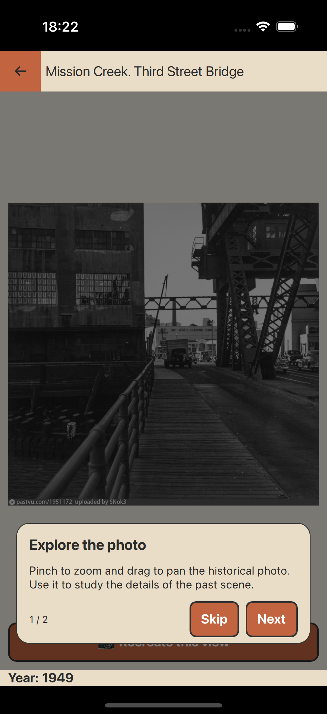

Explore by place
Move around an interactive map with clustering. Discover archival photos for the area in view—whether you are planning a trip or standing on the same corner today.
Past Viewer is a map-first app for exploring geotagged historical photographs from the PastVu community archive. Pan the world, pick an era, open full images, and compare then with now.
Each map marker is a window into how streets, buildings, and landscapes used to look.
Move around an interactive map with clustering. Discover archival photos for the area in view—whether you are planning a trip or standing on the same corner today.
Narrow the years to match the period you care about, then reload the scene to focus on that slice of history.
Open a photo to see title and year, then pinch to zoom and pan the high-resolution historical image.
Use camera mode to line up archival shots with live video—perfect for imagining the same vantage point today.
Optional location lets the map show where you are. Settings include modes tuned to what is near you versus the broader map view.
The interface is localized for multiple locales so captions and onboarding match your preferred language where available.
Representative in-app screens:



Past Viewer loads open community content over the network.